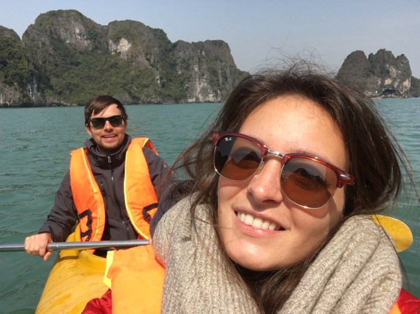
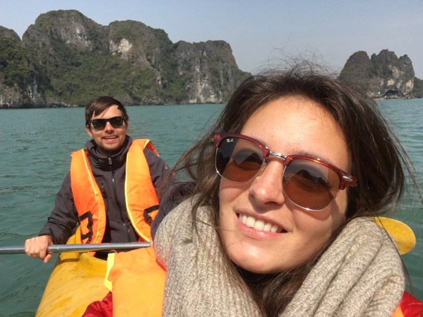

PS: abbiamo aggiornato dei video che avevamo sbagliato a caricare nello scorso post. Dateci un occhiata se avete tempo e voglia.
A sole 2 ore di volo da Ho Chi Minh siamo atterrati in quel di Hanoi, capitale del Vietnam. La città è suddivisa nella parte vecchia, costituita da tante strette viuzze piene di artigiani (marciapiedi bloccati da scooter parcheggiati ovunque), e la parte nuova di cui non abbiamo visto molto. È stato nuovamente uno shock termico passare dai 30°C di Ho Chi Minh ai 5-10°C di Hanoi–> fortunatamente era domenica sera e c’era il weekend market in città, dove abbiamo potuto rifornirci di giacconi, pantaloni lunghi e vestiario più adatto al clima, spendendo poco. Siamo poi andati in un teatro a vedere il famoso Water Puppet Show vietnamita! È un tradizionale spettacolo con le marionette, molto particolare: inizialmente ci sono sembrati un po’ tutti dei bambèla a far versi e far saltare i “pesci-marionetta” nel finto lago… ma dopo il primo impatto abbiamo imparato ad apprezzare la loro semplice e autentica forma di espressività/creatività accompagnata da strumenti melodici e coerenti con l’ambiente creato (purtroppo non abbiamo colto appieno la trama della storiella essendo stata esposta in vietnamita). È stato molto caratteristico!
Hanoi però è stata solo una tappa di passaggio per andare verso Halong Bay. Stupenda!!! Ci è piaciuta tantissimooo! La Baia di Halong è una delle 7 meraviglie naturali del mondo. In lingua vietnamita il termine “Ha Long” significa “dove il drago scende in mare“: una leggenda locale dice che molti anni fa i vietnamiti stavano combattendo gli invasori cinesi; gli Dei mandarono una famiglia di dragoni ad aiutarli, i quali sbattendo le code crearono questa baia.
Abbiamo riservato una crociera di 3 giorni e 2 notti tramite una delle compagnie più low cost (la maggior parte sono “di lusso”), rivelatasi comunque più che accettabile a livello di comfort e servizi. Nessuno di noi aveva mai fatto un’esperienza in barca prima d’ora, quindi è stato ancora più emozionante.
La barca era in legno e ospitava una decina di cabine. Stanza molto essenziale e piccolina.. ci faceva un po’ schifo dormire sulle lenzuola, quindi abbiamo usato il nostro sacco a pelo… però che bel panorama dalla finestra!
Tra le varie attività pre-organizzate abbiamo avuto molto tempo libero per conoscere tanta bella gente, “fare party sul tetto” come dicevano loro (vinello con sottofondo di Celin Dion “my heart will go on”–> incoraggiante), giocare a giochi di società (Clm&Ethan rimanete comunque i nostri fidati compagni), pescare, etc. Abbiamo trascorso molto tempo con una coppia proveniente da Singapore e ci siamo affezionati ad una simpaticissima famiglia austriaca. Tanti racconti e bei momenti trascorsi assieme.
Il primo giorno abbiamo esplorato la Sung Sot Cave -o grotta delle sorprese- che è la più grande e bella caverna di tutta la baia. Si chiama grotta delle sorprese perché passando da una stanza all’altra (a quanto pare si dice così) diventa sempre più ampia e sorprendentemente affascinante. Non ci sembrava possibile che una grotta potesse raggiungere tali dimensioni senza crollare! Attraverso i sentieri di pietra, passando tra stalattiti e stalagmiti, a noi è parso di respirare un’atmosfera tolkieniana.
Un’altra attività che abbiamo svolto sulla baia di Halong è stata quella del kayaking! Il piccolo kayak ci ha permesso di visitare luoghi più nascosti, difficilmente raggiungibili con una barca. Siamo infatti entrati in una baia abitata da scimmie selvatiche accedendovi da un tunnel naturale.
Sebbene ci avessero avvertiti di fare attenzione alle scimmie, noi ci siamo avvicinarci (forse troppo), e il capo branco ci ha quasi attaccati! ü§ê pronta a tirargli una pagaiata in testa, ho mollato la presa della videocamera nel momento clou.
 

Comment Section